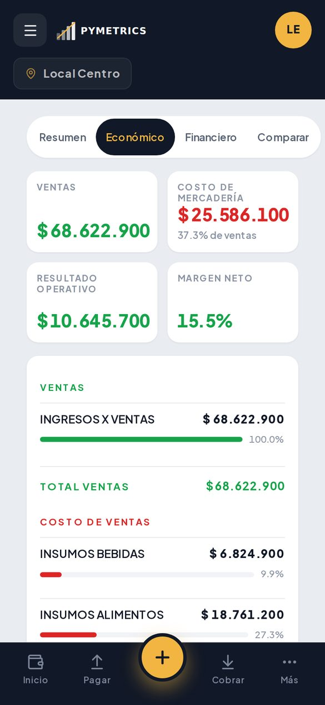

Una app propia y un equipo que concilia, audita y cierra tu mes, por el sueldo de un camarero. Bancos, cajas y billeteras virtuales al centavo. Cada semana sabés cómo venís con el costo de mercadería, y el día 10, si ganaste o perdiste plata. Si no cumplimos, no lo pagás.
«Lo que no ves en tus números»: nos pasás un mes de extractos y en 7 días te mostramos lo que encontramos. Cómo es el diagnóstico
Un camarero es una sola persona, y no hace la administración. Por lo que gana uno, tenés un equipo administrativo entero.
No es culpa tuya. Nadie te enseñó a leer los números de tu negocio. Pero tiene solución.
«Cierro el mes y recién a los 40 días sé si gané o perdí.»
«El papel dice una cosa, mi caja dice otra y el banco, otra distinta.»
«La mercadería subió y me enteré tres semanas después, vendiendo a pérdida.»
«Sospecho que hay algo raro en la caja, pero no tengo cómo verlo.»
«¿Abro otro local? ¿Contrato? Mi contador me habla del trimestre pasado; yo necesito saber qué hago el lunes.»
«Sé que tendría que mirarlos. No tengo tiempo ni ganas: yo quiero atender mi negocio.»
Somos tu área administrativa. Vos manejás tu negocio; nosotros cargamos, auditamos y te decimos exactamente qué está pasando con los números.
Tu local cierra la venta del día en el celular. Nosotros cargamos facturas y pagos, y conciliamos bancos, cajas, billeteras virtuales y tarjetas.
Revisamos cada movimiento y te avisamos cuando algo no cierra: costos que suben, cajas con diferencias.
Desarrollan y mantienen tu aplicación privada, con tus números al día.
Automatizamos la carga de facturas y la auditoría de movimientos: sacás la foto y los datos se completan, el extracto se clasifica solo y la app detecta lo cargado dos veces. Menos errores de carga.
Un solo paquete: la app propia y un equipo que concilia, audita y cierra tu mes. La puesta en marcha y la migración van incluidas.
Con los extractos que nos pasás semana a semana, dejamos tus bancos, cajas y billeteras virtuales como Mercado Pago iguales al centavo, con cada comisión de tarjeta registrada y sin pagos repetidos.
Cada semana, cómo venís con el costo de mercadería, para corregir a tiempo. Y el día 10, el resultado de los últimos tres meses, lo que ganaste separado de la plata que se movió, la deuda, las preguntas clave y cuánto tiene que poner cada socio y para qué.
Lo que carga uno, lo revisa otro. Y alertas automáticas para los cheques sin debitar, las cargas dobles y los días sin cierre.
Facturas, vencimientos, cheques y echeqs, y la orden de pago de cada semana. Sabés qué pagar y cuándo.
El cierre del día en el celular, cajas por turno con fondo, conteo y retiro, y permisos por persona: cada uno ve solo lo suyo.
Además: sueldos desde la caja sin que la cajera vea los montos, resumen semanal de cuánto te falta para el punto de equilibrio, tareas del local con aviso diario por Telegram, y pedidos a proveedores con conteo de inventario. El punto de venta y la facturación se cotizan aparte.
Una garantía para arrancar y otra para quedarte.
En 30 días tus bancos y billeteras virtuales quedan iguales al extracto, al centavo. Si no, el mes siguiente no lo pagás.
Condición: que nos pases los extractos semana a semana desde el primer día. No hace falta que nos des tus claves.
Cada semana, tu costo de mercadería. Y el día 10, el informe del mes en tu app. Si llega tarde por nosotros, ese mes no se cobra.
Condición: los extractos semana a semana y el cierre de ventas de cada día cargado.
No usamos planillas de Excel genéricas. Toda la información de tu negocio vive ordenada, segura y accesible en una aplicación privada e interna. Regla de oro: un extracto que no coincide con el saldo del banco no entra.
Sin conexión con sistemas gubernamentales. Sin compartir datos con terceros. Tu información es solo tuya.

Cuatro casos de clientes activos. Van sin nombre: los números de cada negocio son suyos.
En octubre, sus bancos y Mercado Pago quedaron iguales al extracto. En el camino encontramos y corregimos 20 pagos repetidos: estaban cargados a mano y además venían en el extracto.
para pasar toda la planilla a la app, con los saldos finales iguales a los del Excel. No se perdió la historia.
que encontró la revisión del cierre: sueldos sin cargar, transferencias propias tomadas como gasto, débitos contados dos veces y comisiones de tarjeta nunca registradas.
cambiaron de costo al corregir dos errores de fórmula que tenía su planilla. Un trago bajó 12,3%.
Alertas en todos los clientes: controles automáticos revisan los números y nos avisan antes de que sea un problema. Cheques sin debitar, extractos cargados dos veces, mercadería por encima del objetivo, días sin cierre de ventas.
Nos pasás un mes de extractos del banco y de Mercado Pago y, si la tenés, tu planilla de costeo. La revisamos con las mismas reglas que usa la app.
En una reunión de 30 minutos te mostramos lo que encontramos y cómo seguiría con Control Real.
Pedir mi diagnósticoPara cafeterías, bares, restós y grupos gastronómicos con al menos un local abierto y cuenta bancaria del negocio.
Más de 28 negocios gastronómicos donde trabajamos de cerca en su administración, sus compras, sus números y la implementación de sus sistemas. Estos son algunos.
Hace más de 10 años que trabajo en gastronomía, en más de 28 negocios. Vi de cerca cómo dueños trabajaban 12 horas al día sin saber si realmente estaban ganando dinero. Tenían clientes, tenían movimiento, pero los números nunca cerraban del todo.
No reemplazamos a tu contador: hacemos todo el trabajo administrativo que hoy hace (o no hace) alguien de tu equipo.
El contador mira hacia atrás: registra lo que ya pasó y se lo declara al fisco. Nosotros miramos el presente y el futuro. No somos excluyentes: muchos clientes tienen contador y también trabajan con Pymetrics.
No. Trabajamos con lo que tenés, en el formato que lo tenés. Parte del trabajo inicial es organizar, limpiar y estructurar tu información.
Poco, pero sí. Semana a semana nos pasás los extractos del banco y de las billeteras virtuales: no hace falta que nos des tus claves. Tu local carga el cierre de ventas del día en el celular, con un solo botón. El resto lo hace el equipo: facturas, conciliación, revisión y cierre del mes.
Para cafeterías, bares, restós y grupos gastronómicos, en Argentina, Venezuela y LATAM. Es donde tenemos más de 10 años de experiencia.
Sí. Sistema privado desarrollado internamente, sin conexión con organismos gubernamentales ni terceros. Solo tu equipo y Pymetrics tienen acceso.
Sí, 100% online en toda LATAM. También presencial según disponibilidad en Buenos Aires, Caracas y Estado Zulia.
Empezá por el diagnóstico gratis: un mes de extractos y, en 7 días, sabés lo que no estabas viendo.